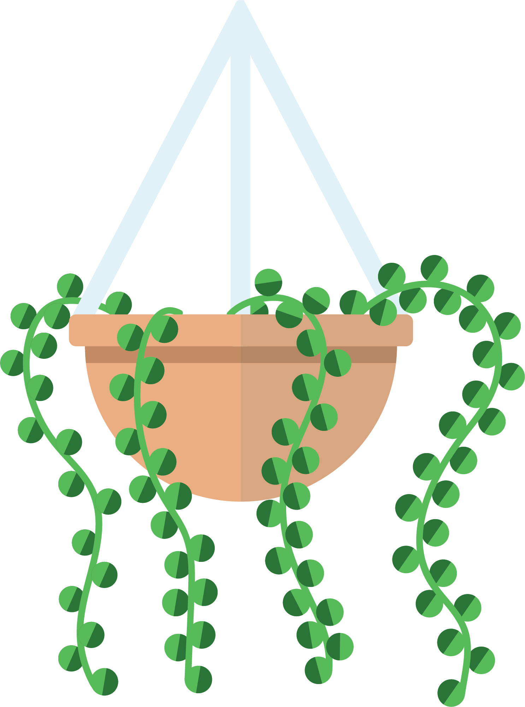
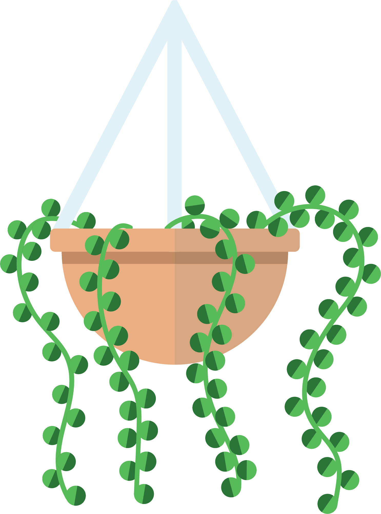

Here is a vector image I made in Illustrator (AI). AI is probably my favorite program. I love the scaling abilities it has and it's much more satisfying how there isn't a blur. I wasn't very comfortable making this snake at the beginning because I struggled with working on anything other than type! Since this project I have practiced a lot more and I've gotten a lot better at controlling the way I make shapes.